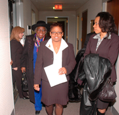
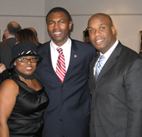

The Honorable Commissioner Pat Horton with President Barack ObamaThe Honorable Commissioner Pat Horton attending a political event where President Barack Obama was in attendance when he was running as Illinois Senator. |
The Honorable Commissioner Pat Horton with world re-known music producer Maurice WhiteThe Honorable Commissioner Pat Horton at her inauguration as commissioner for Metropolitan Water Reclamation District of Greater Chicago. Included in this picture is Pat Horton, Maurice White, and her grandson D'Angelo. |
The Honorable Commissioner Pat Horton with Reverend Johnny MillerThe Honorable Commissioner Pat Horton at her inauguration for Metropolitan Water Reclamation District of Greater Chicago. Included in this picture is Honorable Pat Horton, Reverend Johnny Miller, and elected and Toma Brown. |
The Honorable Commissioner Pat Horton with Doctor Ken ShaferThe Honorable Commissioner Pat Horton at her inauguration for Metropolitan Water Reclamation District of Greater Chicago. Included in this picture is Pat Horton and Doctor Ken Shafer of North Park Theological University. Doctor Shafer was Honorable Commissioner Pat Horton's business adviser. |
The Honorable Commissioner Pat Horton with the Honorable Commissioner Bobbie SteeleThe Honorable Commissioner Pat Horton at her inauguration for Metropolitan Water Reclamation District of Greater Chicago. Included in this picture is Pat Horton and the Honorable Bobbie Steele. The Honorable Bobbie Steele was the first female president of the Cook County Board. The Honorable Bobbie Steele is Godmother and mentor to the Honorable Commissioner Pat Horton. |
The Honorable Commissioner Pat Horton with the Honorable Commissioner Bobbie SteeleThe Honorable Commissioner Pat Horton at her inauguration for Metropolitan Water Reclamation District of Greater Chicago. Included in this picture is The Honorable Commissioner Pat Horton and the former Cook County Board President, Honorable Bobbie Steele. |
The Honorable Commissioner Pat Horton with Edward F. McelroyThe Honorable Commissioner Pat Horton at her inauguration for Metropolitan Water Reclamation District of Greater Chicago. Included in this picture is The Honorable Commissioner Pat Horton and Ed Macelroy who is the PR representative of MWRD. |
The Honorable Commissioner Pat Horton with Honorable Commissioner Larry Suffredinhe Honorable Commissioner Pat Horton at her inauguration for Metropolitan Water Reclamation District of Greater Chicago. Included in this picture is The Honorable Commissioner Pat Horton and Honorable Cook County Commissioner Larry Suffredin. In this picture Honorable Commissioner Larry Suffredin is congratulating Honorable Commissioner Pat Horton on her successful achievement into office. who is the PR representative of MWRD. |
The Honorable Commissioners Pat Horton, Terrence J. O'Brien, and Debra ShoreThe Honorable Commissioner Pat Horton at her inauguration for Metropolitan Water Reclamation District of Greater Chicago. The three Honorable Commissioners pose for a PR shot following their inauguration. |
|  |
The Honorable Commissioner Pat HortonThe Honorable Commissioner Pat Horton preparing to her celebration reception following her inauguration for Metropolitan Water Reclamation District of Greater Chicago. |
The Honorable Commissioner Pat Horton with her Godmother and familyThe Honorable Commissioner Pat Horton at her inauguration for Metropolitan Water Reclamation District of Greater Chicago. Following her reception for her election as Commissioner of MWRD, the Honorable Commissioner poses with her Godmother Bobbie Steele, her mother Annie Mae Houston, and grandchildren Amaya and Amenia. |
The Honorable Commissioner Pat Horton with her mother Annie Mae HoustonThe Honorable Commissioner Pat Horton at her inauguration for Metropolitan Water Reclamation District of Greater Chicago. A touching mother and daughter moment. Annie Mae Houston 1929 - 2007. |
The Honorable Commissioner Pat Horton and familyThe Honorable Commissioner Pat Horton at her inauguration for Metropolitan Water Reclamation District of Greater Chicago. The Honorable Commissioner Pat Horton with her family. Shown left to write is her brother Earnest Lee, brother Prince Lee 1957 - 2010, mother Annie Mae Houston 1929 - 2007, and brother George Turner. |
Annual Legislation Day in Springfield, IllinoisThe Honorable Commissioner Pat Horton attending the Annual Legislation Day in Springfield, Illinois. Included in this picture from left to right are Honorable Commissioner Barbara McGowen, Honorable Commissioner Frank Avili, Executive Director Richard Zanyon, Honorable Commissioner Cynthia Santos, Honorable Commissioner Pat Horton, Honorable Commissioner Maryanna Spuropous, Elected Official, Honorable Commissioner Diane Shore, and Honorable Commissioner Terrence J. O'Brien. |
Tennis friends of the Honorable Commissioner Pat HortonMaywood Tennis Association team mates. The Honorable Commissioner Pat Horton along with the Maywood Tennis Association provides free tennis lessons for any urban youth age 8 - 18. For more contact Pat. |
The Honorable Commissioner Pat Horton and Cook County Board of Review Larry RogersAttending a Political Event and posing with Larry Rogers, a member of the Cook County Board of Review. |
The Honorable Commissioner Pat Horton and Illinois State Senator Kwame RaoulAttending a Political Event and posing with Illinois State Senator Kwame Raoul. |
The Honorable Commissioner Pat Horton with Dorthy Brown, the Honorable Clerk of Circuit CourtAttending a special inauguration event in Springfield with the Honorable Clerk of Circuit Court Dorthy Brown. |
The Honorable Pat Horton with former Senate President Emil JonesAttending a political event with former Senate President Emil Jones. |
The Honorable Commissioner Pat Horton with Security DetailSecurity detail for the Honorable Commissioner Pat Horton was provided by Reggie Browder of Browder Maximum Security. Included in the security detail are security officers Sean, Prince, and Teressa. |
The Honorable Commissioner Pat Horton with the late Diane JonesDiane Jones provided the Honorable Commissioner Pat Horton with invaluable service while they worked together for the Metropolitan Water Reclamation District. It was with the discovery that her dear colleague and friend diagnosis with cancer which eventually took this incredible woman's life, that Commissioner Pat Horton shaved her head in memory and support of her friend and her battle with cancer. |
The Honorable Commissioner Pat Horton and Kenny JohnsonAttending a political event with Kenny Johnson, a successful business executive and renown music promoter. |
|  |
The Honorable Commissioner Pat Horton with Kenny Johnson and Lashawn FordAttending a political event with Illinois State Representative Lashawn Ford and Kenny Johnson, business executive and music promoter. |
The Honorable Commissioner Pat Horton with Honorable Senator Kimberly LightfordAttending a political event with Illinois State Senator, Kimberly Lightford. |